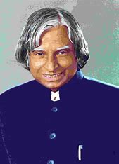

A . P . J . Abdul Kalam
1931 - 2015
Missile Man of India
Avul Pakir Jainulabdeen Abdul Kalam was the epitome of scientific brilliance, unwavering patriotism, and deep-seated humanism. His life, an extraordinary journey from humble beginnings to the pinnacle of scientific achievement, serves as an inspiration to generations. Born on October 15, 1931, in Rameswaram, Tamil Nadu, India, Kalam’s early life was marked by financial constraints yet an insatiable thirst for knowledge. Despite the challenges, he excelled in his studies and pursued his passion for science, earning him the moniker “Missile Man of India.” Kalam’s contributions to India’s scientific and technological progress are unparalleled. His pivotal role in the development of India’s first indigenously developed ballistic missile, the Agni, and its first satellite launch vehicle, the SLV-III, cemented his legacy as a pioneering scientist.
Biographies
- Born on 15 October 1931 in Rameswaram, Tamil Nadu, into a humble Muslim family.
- Studied Aerospace Engineering at the Madras Institute of Technology (MIT).
- Worked with DRDO and ISRO and led the development of India’s missile and satellite programs.
- Known as the “Missile Man of India” for his role in developing Agni and Prithvi missiles.
- Played a key role in the 1998 Pokhran-II nuclear tests.
- Served as the 11th President of India (2002–2007), popularly called the People’s President.
- Authored inspirational books like “Wings of Fire” and “Ignited Minds”.
- Passed away on 27 July 2015 while delivering a lecture at IIM Shillong.